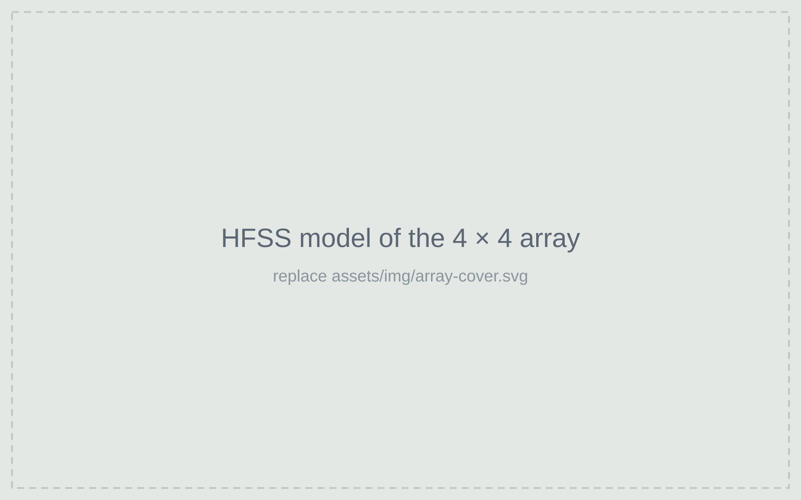
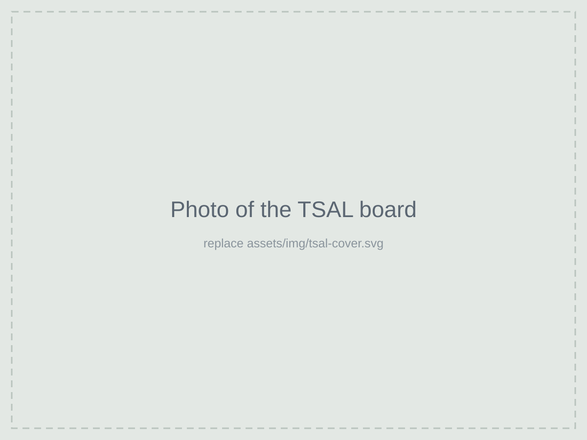
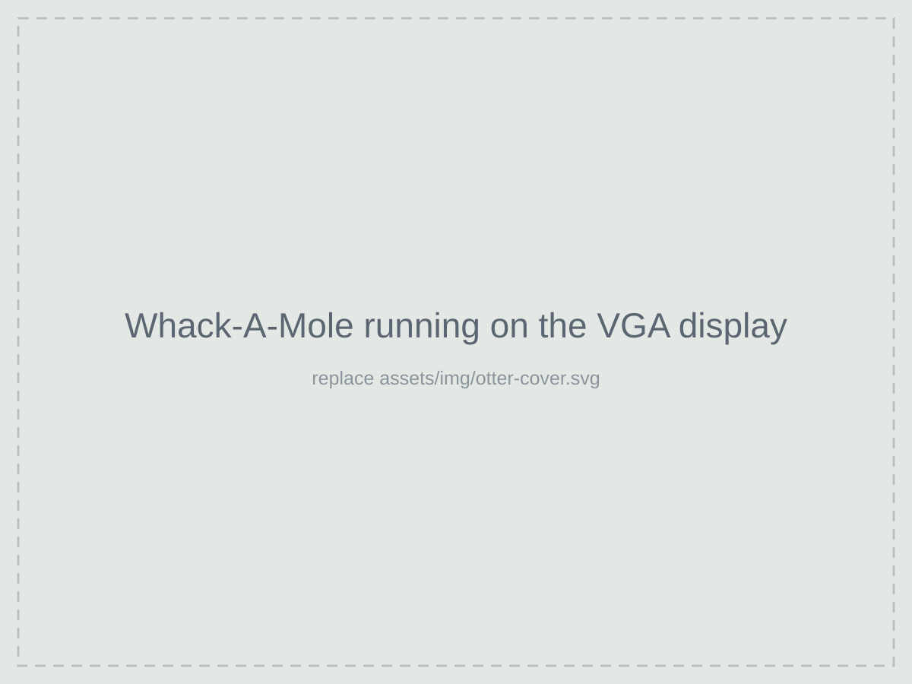
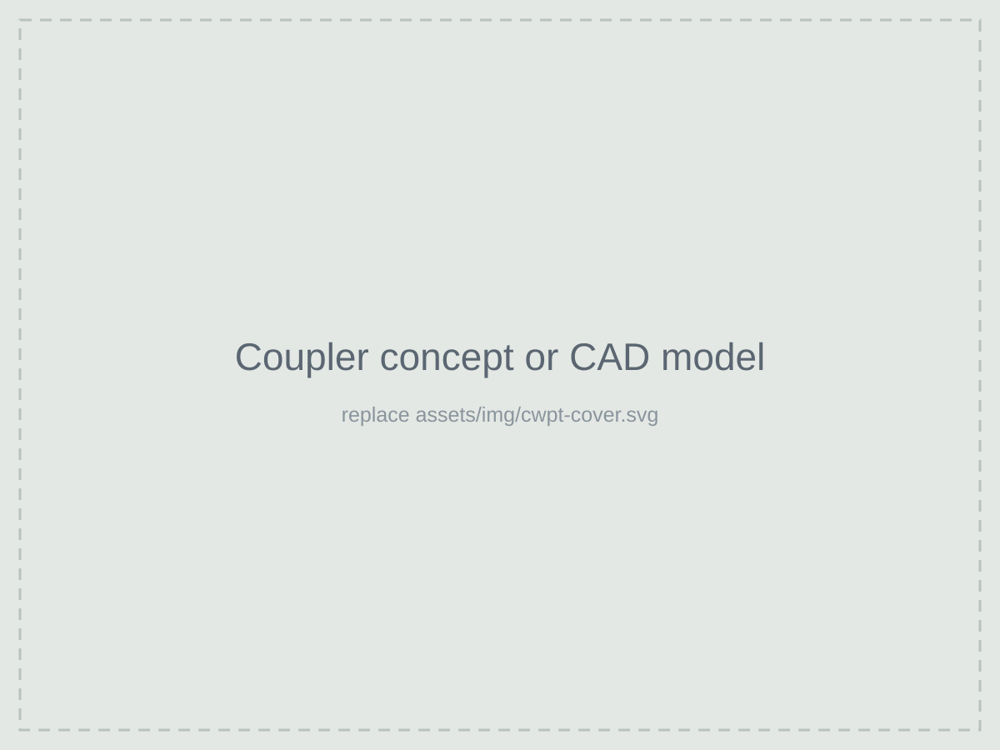

Kai Iniguez
I'm an electrical engineering student at Cal Poly San Luis Obispo, graduating in May 2027. Most of my work is in antennas and RF systems: I design in Ansys HFSS, then take the hardware to the network analyzer and spectrum analyzer to see how close the simulation got.
Right now I'm designing a 28 GHz phased array for 5G beam steering and, for my senior project, an automatically tuned HF magnetic loop antenna. This past summer I was an EMC test engineering intern at Hewlett Packard Enterprise, where I automated lab measurements in Python. After graduation I'm looking for full-time work in RF, antenna and test engineering.
Projects

Independent project, Aug 2026 – present
28 GHz phased array for 5G beam steering
A 16-element mmWave array modeled in Ansys HFSS. I'm steering the beam electronically and measuring what it costs in gain, sidelobes and scan loss, including what happens when elements fail or phase shifters are off.
Ansys HFSS, MATLAB, array theory

Senior project, Aug 2026 – present
Automatically tuned HF magnetic loop antenna
A compact loop antenna for 7–14 MHz built for Hascall-Denke. It retunes itself across the band with an electrically actuated capacitor and a 50 Ω matching network. Three-person team.
Ansys HFSS, matching networks, prototyping

Cal Poly Racing, Formula SAE Electric
Tractive System Active Light board
Part of the high-voltage safety system on the team's electric race car. I designed and fabricated portions of the PCB in Altium.
Altium, high-voltage safety, FSAE rules

Course project, Jan – Jun 2026
RC car embedded control system
C firmware on an STM32 that ties together wireless control, motor drive and steering in real time.
C, STM32, PWM, timers, interrupts

Course project, Jan – Jun 2025
OTTER CPU and a Whack-A-Mole game
A working CPU written in SystemVerilog, with my own assembly program driving a VGA display and keypad.
SystemVerilog, FPGA, assembly

Concept study
Capacitive wireless charging for a lunar rover
Early design work on charging a rover through electric-field coupling, where gap, alignment and dust all move the resonance.
Resonant design, coupler geometry
Experience
-
Jun – Aug 2026
EMC Test Engineer Intern
Hewlett Packard Enterprise
- Wrote Python automation with PyVISA and SCPI to run VNAs and oscilloscopes and generate reports, cutting test and report time by 75%.
- Characterized coupling/decoupling networks and LISNs on a VNA, measuring insertion loss and impedance from 150 kHz to 30 MHz.
- Verified an EFT/burst generator's pulse parameters with an oscilloscope.
- Supported RF and EMC measurements with spectrum analyzers and in a 10-meter anechoic chamber.
-
Sep 2025 – Jun 2026
High Voltage Subteam Member
Cal Poly Racing, Formula SAE Electric
- Designed and fabricated portions of the Tractive System Active Light PCB in Altium.
- Worked on high-voltage wiring, safety systems and subsystem integration on the car.
-
Jan 2024 – present
Member
Power Engineering Society, Cal Poly
-
Expected May 2027
B.S. Electrical Engineering
California Polytechnic State University, San Luis Obispo. 3.5 GPA, Dean's List.
Relevant courses: Phased Array Antennas (graduate), Wireless Communications, Communication Systems, Electromagnetic Waves, Control Systems, Semiconductor Device Electronics, Digital Electronics and Integrated Circuits.
Skills
- RF and antennas
- Antenna and array design, matching networks, S-parameter and spectrum measurements, EMC testing
- Lab equipment
- Vector network analyzer, spectrum analyzer, oscilloscope, RF signal generator, source meter
- Design tools
- Ansys HFSS, Keysight ADS, LTspice, Altium, Eagle, Fusion 360
- Programming
- Python (PyVISA, SCPI automation), MATLAB, C, SystemVerilog, Arduino
Get in touch
I'm looking for full-time roles in RF, antenna and test engineering starting after I graduate in May 2027. Email me at kaiiniguez27@gmail.com or find me on LinkedIn.